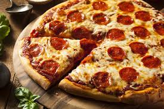

Pizza
Description
pizza, dish of Italian origin consisting of a flattened disk of bread dough topped with some combination of olive oil, oregano,
tomato, olives, mozzarella or other cheese, and many other ingredients, baked quickly—usually, in a commercial setting, using a wood-fired oven heated to a very high temperature—and served hot.
ingredients
- 1 teaspoon active dry yeast
- 1 cup warm water
- 3 cups all-purpose flour
- 2 teaspoons salt
- 2 tablespoons olive oil
- 1 cup tomato sauce
- 8 oz fresh mozzarella cheese, sliced
- Fresh basil leaves
Instructions
- In a large bowl, dissolve yeast in warm water. Let sit for 5 minutes until foamy.
- Add flour and salt to the bowl and mix until a dough forms.
- Knead the dough on a floured surface for 5 minutes.
- Place the dough in a lightly oiled bowl, cover with plastic wrap, and let it rise in a warm place for 1 hour.
- Preheat the oven to 450°F (230°C).
- Roll out the dough on a floured surface to your desired thickness.
- Place the dough on a pizza pan or baking sheet.
- Spread tomato sauce evenly over the dough, leaving a small border around the edges.
- Add slices of mozzarella cheese and fresh basil leaves on top of the sauce.
- Bake for 12-15 minutes, or until the crust is golden brown and the cheese is melted.
- Serve hot and enjoy!